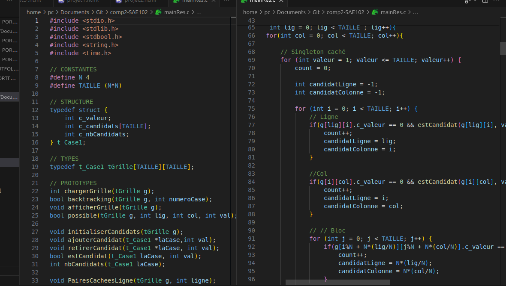
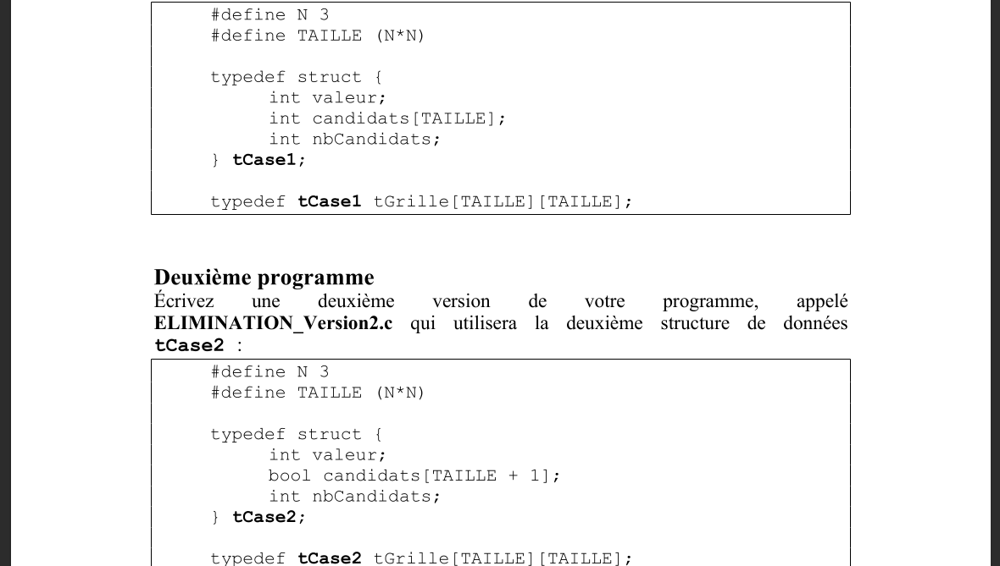

SAE 302 \
Intégration de données dans Datawarehouse
Développer un outil décisionnel - Compétence 4
Étapes \
- Recherche, analyse et sélection des sources de données (Site web à scraper et API météorologique SYNOP)
- Extraction et structuration des données via Web Scraping et requêtage API filtré
- Traitement et manipulation des données géographiques et climatiques sous forme de DataFrames
- Conception d'un tableau de bord interactif avec indicateurs visuels (Cartes Folium et graphiques comparatifs)
- Optimisation du code, gestion des erreurs et automatisation de l'outil décisionnel
Traces du Projet \


Outils \
- VSCode
- Python